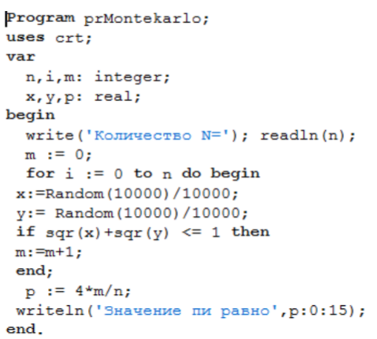
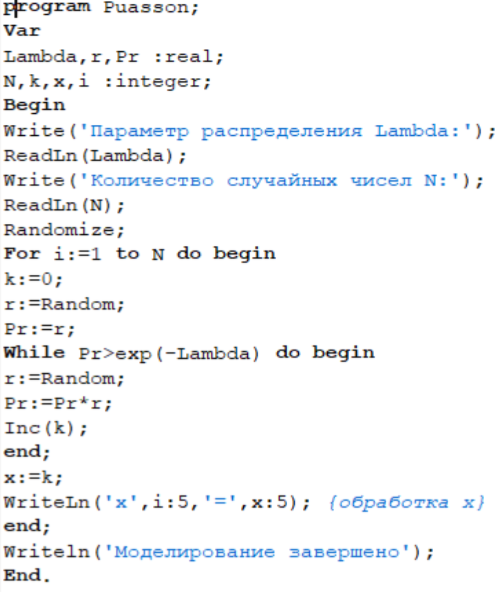
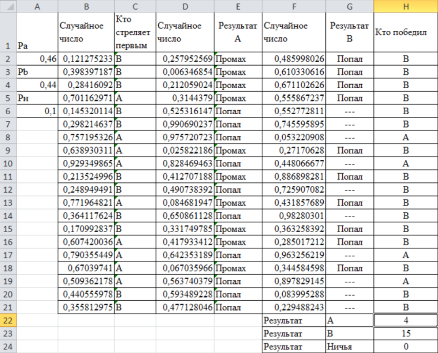

Системный подход. Моделирование систем. Моделирование в физике, биологии, экономике, математике
Ознакомтесь с видео роликом:
Выполните задания: Задание 1. Составить программу нахождения числа Пи. Запишите результаты экспериментов, начиная с N=100; 1 000; 10 000; 100 000; 1 000 000 в таблицу.

Задание 2. Составить программу моделирования случайных чисел, отвечающих распределению Пуассона с параметром λ=2.

Задание 3. Средствами электронных таблиц решить задачу. Происходит дуэль между участниками A и B. Участник A стреляет первым с вероятностью pa=0,9.
При стрельбе участник A попадает в B с вероятностью pa=0,5, а участник B в A с вероятностью pb=0,8. Участники делают не более одного выстрела. Оценить вероятность победы участника A, B и вероятность ничьей.
Решение. Выполняем аналитический расчет требуемых вероятностей.
P(A)=ppA+(1-p)(1-pB)pA=0,46;
P(B)=p(1-pA)pB+(1-p)pB=0,44;
P(H)=(1-pA)(1-pB)=0,1;
Значения вероятностей pa, pb, pH выставляем в ячейки A2, A4, A6.
Последовательность 20 случайных чисел реализуем в столбцах B, D, F с помощью функции СЛЧИС().
В ячейке С2 реализуем «Кто стреляет первым» с помощью функции =ЕСЛИ(B2>=$A$2;"A";"B")
В ячейке E2 «Результат A» с помощью функции =ЕСЛИ(D2>=$A$4;"Попал";"Промах")
В ячейке G2 «Результат B» с помощью функции =ЕСЛИ(И(E2="Попал");"---";ЕСЛИ(И(F2>=$A$6;E2="Промах");"Попал";"Промах"))
В ячейке H2 «Кто победил» с помощью функции =ЕСЛИ(И(C2="A";E2="Попал");"A";ЕСЛИ(И(C2="B";E2="Попал");
"B";ЕСЛИ(И(E2="Промах";G2="Промах");"Ничья";ЕСЛИ(И(G2="Попал");"B")))

В результате 20 испытаний высчитываем в ячейке H22 сколько раз выиграл A с помощью функции =СЧЁТЕСЛИ(H2:H21;"A");
в ячейке H23 с помощью функции =СЧЁТЕСЛИ(H2:H22;"B");
в ячейке H24 с помощью функции =СЧЁТЕСЛИ(H2:H23;"Ничья").